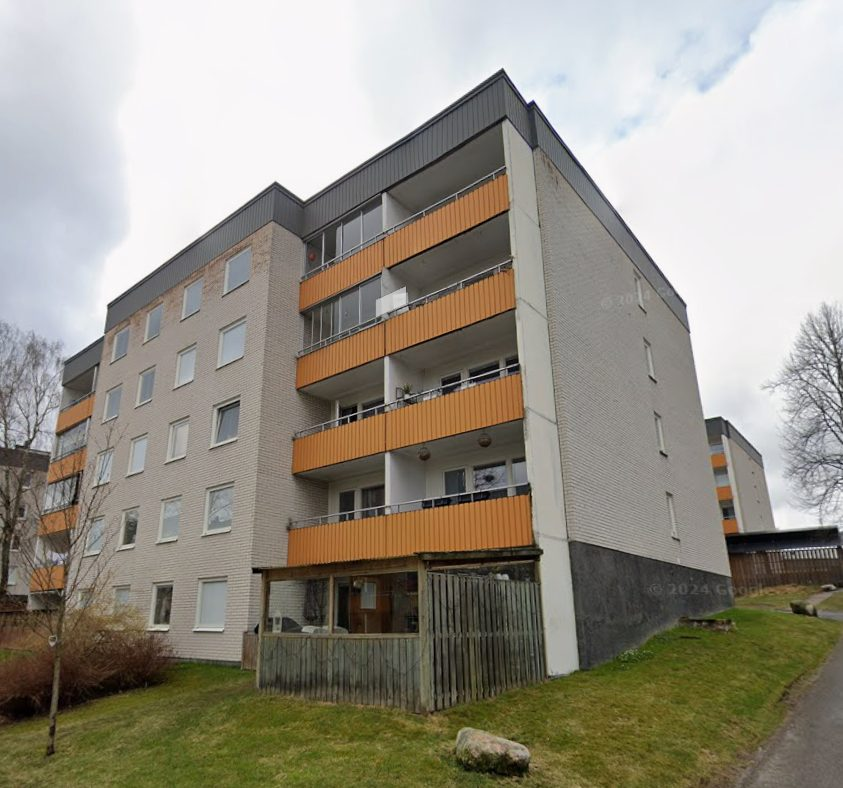

199 lägenheter i tegel och trä, med skog, sjö och cykelvägar runt knuten. Det här är föreningens hemsida – för dig som bor här.
Lindarna vid hus 22, oktober.
01
Boka tvättstugan
Se lediga tider och boka direkt, även från telefonen.
→
02
Felanmälan
Anmäl fel i trapphus, tvättstuga eller på gården.
→
03
Samlingslokalen
Hyr lokalen till kalas, möten och träffar.
→
04
Stadgar & protokoll
Årsredovisning, styrelseprotokoll och trivselregler.
→

Ockra balkongpaneler – huskaraktär sedan byggstart.
Att bo här
Nära till skola, daghem, bad och skog.
Området byggdes 1972–1975 med parker mellan husen. Sedan 2011 äger föreningen både husen och marken – 10 flerbostadshus, en butikslokal, tvättstuga och en samlingslokal som alla boende kan hyra.